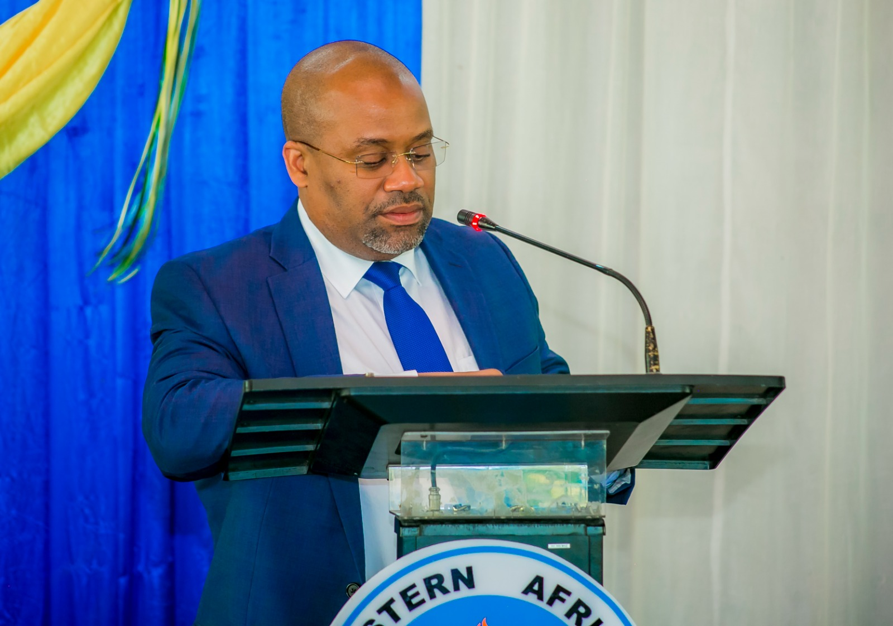

THE 7TH ANNUAL GENERAL MEETING OF THE CONVOCATION OF THE EASTERN AFRICA STATISTICAL TRAINING CENTRE
VENUE:FUNCTION HALL
WEDNESDAY,14TH DECEMBER 2024
Tentative Agenda
- opening
- Adoption of the Agenda
- Confirmation of minute of the 6th EASTC convocation
- Matter arising from the 7th EASTC Convocation
- Report from the president of the convocation
- Convocation strategic plan(EASTC Alumni Association progress,Operational guideline)
- Annoncement of next AGM
- Any other business
- Adjourning the meeting
the following are the image of full department of the 7th convocation ceremony


The president of covocation is Ms. Nyambilila.N.Minga(she is found in the first picture in the right hand side)
The guest of honor will be the rector of the EASTC family
